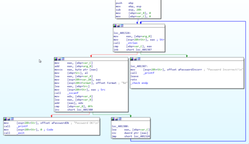
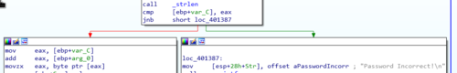
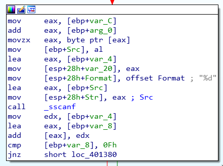
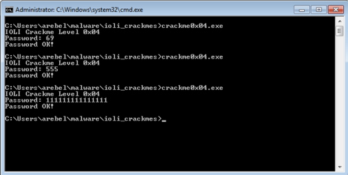
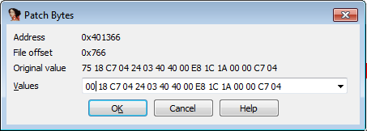
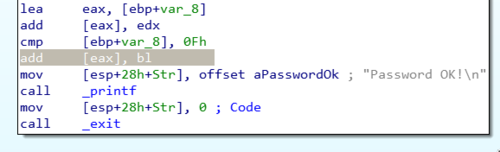

I am continuing my reverse engineering review by tackling the IOLI crackmes by @pof. These are beginner friendly challenges that is perfect for newbies or for those who want to review the basics like me. Check out my writeups for 0x00, 0x01, 0x02, and 0x03.
Getting the password
Loading the program in IDA revealed something new. There is now a _check function that when opened looks more complicated than the previous challenges.

The one thing that I immediately noticed is the call to the _strlen function similar to the previous challenge. This means that the length of the input string plays another important role.
One curious thing is the condition that leads to the "Password Incorrect" block, as shown below.

call _strlen
cmp [ebp+var_C], eax
jnb short loc_401387
From the looks of it, the check will fail if var_C (Which is our var_counter from the previous challenge) reaches the length of the entered string. If you think about it, this means that it doesn't matter how long the string that the user inputs. What's important is the content.
To find out what the correct content the program expects, we need to look at the other block of code.

The code uses the same approach as the previous challenge where var_counter is used to loop through individual characters in the input string.
The part that is new is the use of the _sscanf function which is defined as:
"sscanf reads data from s and stores them according to parameter format into the locations given by the additional arguments, as if scanf was used, but reading from s instead of the standard input (stdin)."
Looking at how the function _sscanf is used, it gets each character in the input string and converts them to decimal integers. This means that the password can only contain the numbers 0 through 9. The reason for this is because the result is added to another value at the line add [eax], edx.
This "other value" is the converted integer value from previous loops. This means that the algorithm adds each number from the input string after every loop. For example, an input string of 123 translates to 1+2+3 where the computed sum is saved to var_8.
Finally, there is the line cmp [ebp+var_8], 0Fh, which tells us that the program expects the computed sum to be equal to 0Fh or 15. So as long as we enter numbers that would equal to 15 when combined, then we are good.

Patching the executables
Patching the executable is different this time around. If on previous challenges we patched the program by changing an conditional opcode to a jmp (74 to EB), for this one we only need to change the conditional to a no op instruction (00).

As you can see, the line cmp [ebp+var_8] and the conditional branch disappears allowing us to go directly to the "Password OK" part of the code.

On to the next challenge...
I liked this challenge mostly because it changed the passwords the program expects. The first time I tackled this challenge I used purely static analysis. I thought I got the answer only to realize that I was wrong by debugging the code. We have 5 more challenges to go!